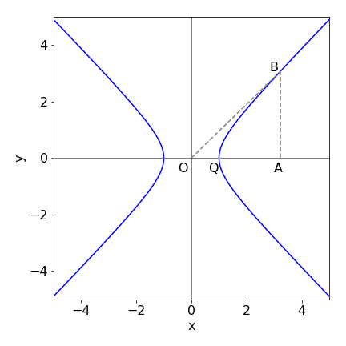
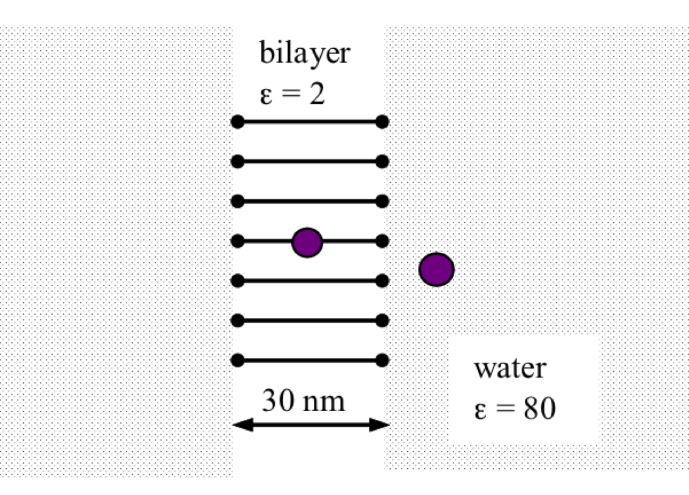

Questions 31 - 48
Contents
Questions 31 - 48#
Q31#
Find the enclosed area for the curves
(a) \(\displaystyle r = a \cos(\theta)\sin(\theta)\),
(b) \(\displaystyle r = a \sin(3\theta + \pi/3)\),
(c) \(\displaystyle r = n \cos(\theta) + \cos(n\theta)\) when \(n\) is an odd integer.
Strategy: Plot the curve and find the angle when \(r = 0\), which will determine the limits. Use equation 19 and Sympy to calculate the area of one loop, then use symmetry to find the total area. In (b) the \(\pi/3\) is only a phase term and does not alter the area -it simply rotates the curve around the axis. This can be ignored, it is up to you, but either way the angle at \(r = 0\) has to be found for the integration limits. One way to do this is to plot the curve but not using polar coordinates. The curve crosses zero at \(r = 0\) and are the points you are looking for. (c) Try values \(n = 1, \,3,\, 5\), etc. to decide what the integration limits are and then generalize the integration and simplify it.
Q32#
(a) Find the difference in area between the two loops of \(r = a (2 \cos(\theta) + 1)\),
(b) Show that the area included between the circle of radius \(a\) and the curve \(r = a \cos(n\theta)\) is three-quarters of the area of the circle where \(n\) is an integer but not zero.
Q33#
Figure 13 shows the hyperbolic curve\(^*\) \(x^2 - y^2 = 1\). If OA = \(\cosh(\theta)\), prove that AB = \(\sinh(\theta)\) and show that the area
Find the area of the triangle OAB and of OQB.

Figure 13. The hyperbolic curve, \(x^2 - y^2 = 1\)
\(^*\) The normal euphony is ‘cosh theta’, and also ‘than’ for tanh with emphasis on the ‘th’, and ‘shine’ for sinh. An alternative usage is ‘sinsh’ for sinh and ‘tansh’ for tanh.
Strategy: Remind yourself that hyperbolic functions described in Chapter 1 are very similar to, but not the same as, the more familiar sine, cosine, and tangent but are easier to use than these functions because in their exponential form no complex numbers are involved.
Q34#
Show that the curve \(r = 1 + 2 \sin(\theta)\) has an inner and outer loop.
(a) Determine what part of the curve, by plotting on Cartesian coordinates, corresponds to the inner loop.
(b) Find the area of the whole curve and
(c) that of the inner loop.
Strategy: Use the area formula equation 19. To calculate (b) use limits \(0 \to 2\pi\) and (c) limits only of the inner loop. The limits are found by solving \(1 + 2 \sin(\theta) = 0\). There are repeated roots - four in the range \(0 \to 2\pi\) - and this is because the curve is not symmetrical about the x-axis. The hardest part of this problem is finding all the roots of the equation \(1 + 2 \sin(\theta) = 0\).
Q35 Pattern of dipole emission#
A radar transmitter has an emission pattern in the shape of the cardioid, \(r = a(1 + \cos(\theta))\). Calculate the ratio of the total transmitted signal to that transmitted backwards which is in the region where \(\pi/2 \le \theta \le 3\pi/2\).
Strategy: The ratio is equivalent to the area with an angle \(\pi/2 \le \theta \le 3\pi/2\) to that of the complete area. The cardioid is shown in Fig. 11 and the area is calculated with equation 19.
Q36 Operators#
An operator will convert one function into another and this is a very familiar process. For example, the log function converts \(x\) to \(\ln(x)\) and indeed this is so common that \(\ln()\) is not thought of as an operator.
In quantum mechanics, the Hamiltonian operator is \(\displaystyle H= -\frac{\hbar^2}{2m}\frac{\partial^2}{\partial x^2}+V(x)\)
which is the differential operator
that describes the kinetic energy, plus \(V(x)\) the potential energy. The differential equation is then \(H\psi=E\psi\) where \(H\) operates on the wavefunction \(\psi\)
Suppose an operator is instead an integral and has the behaviour
and this is called the Laplace transform operator. Notice the notation: the function to be operated upon is placed inside the square brackets on the left. The variables \(s\) and \(t\) are dummy variables and any other two letters could be used instead. The formula tells us that the operator \(L\) changes \(f(t)\), a function of \(t\), into a new function \(F(s)\), a function in the variable \(s\), and which is the integral.
Follow the ‘recipe’ given by the formula and assuming that \(a\) is a constant, show that;
\(\displaystyle \begin{array}{lll} (a)\; L[a]=a/s & (b)\; L[a^{at}]=1/(s-a) & (c)\; L[t]= 1/s^2 \\ (d)\; \displaystyle L[f(at)]=\frac{1}{a}F\left(\frac{s}{a}\right) & (e)\; \displaystyle L\left[ \frac{df}{dt} \right]=sF(s)-f(0) \end{array}\)
\((f)\) Plot some of the functions and their transforms such as (a) and (b) with \(a = 2\).
Q37#
Find the area under the curve \(\displaystyle x^2e^{-\alpha x^2}\) from \(x \to \infty\) where \(x \ge 0\) and \(\alpha \gt 0\).
Q38#
Use a computer algebra application such as Sympy to investigate integrals of the form \(\displaystyle \int x^ne^{-\alpha x^2}dx\).
Q39 Wavefunctions#
The first few harmonic oscillator wavefunctions are
\(\displaystyle \begin{array}{lll} \displaystyle \psi_0(x)=N_0e^{-\alpha x^2/2} & \displaystyle \psi_1(x)=\sqrt{2\alpha}N_0xe^{-\alpha x^2/2}\\ \displaystyle \psi_2(x)=\frac{N_0}{2}(2\alpha x^2-1)e^{-\alpha x^2/2} & \displaystyle \psi_3(x)=\sqrt{\frac{\alpha}{3}}N_0(2\alpha x^2-3)xe^{-\alpha x^2/2} \end{array}\)
where \(\displaystyle N_0 = (\alpha/\pi)^{1/4},\quad \alpha = \sqrt{k\mu}/\hbar\) and \(k\) is the force constant and \(\mu\) reduced mass. By inspection, classify the wavefunctions into odd or even functions.
Q40 Wavefunctions#
(a) Wavefunctions can be described as orthogonal and or normalized. What does this mean? (Look this up in a physical chemistry textbook if you are uncertain.)
(b) Using harmonic oscillator wavefunctions from previous questions show by direct integration that \(\psi_0\) and \(\psi_1\) are (b) orthogonal and (c) normalized.
Strategy: Two wavefunctions are orthogonal if the product of their integral over all coordinates is zero. If wavefunctions are normalized and orthogonal, they are called orthonormal. A normalized wavefunction means that \(\int_\infty^\infty \psi^2 dx=1\) which is interpreted as meaning that the nuclei of the vibrating molecule exists somewhere among all possible values of x. This is common sense. Summarizing: \(\int_\infty^\infty \psi_i\psi_j dx=\delta_{i,j}\) where \(\delta_{i,j}\) is the Kronecker delta function defined as \(\delta_{i,j}=1 \) if \(i=j\) otherwise \(\delta_{i,j}=0 \).
In general, normalization is interpreted to mean that the probability of a particle being somewhere in all possible space is 1 and the probability of being between \(x\) and \(x + dx\) is \(\psi^2dx\).
Q41 Model of disease#
In an SIS type of disease an individual is either susceptible \(S\) or infected \(I\), for example the common cold. Such infections do not give immunization upon recovery from infection, i.e. there is no long lasting immunity and individuals become susceptible again, typically after a few months. The scheme is
and where \(N=I+S\) is the total number of individuals (Britton 2003). When there are very few infected individuals, \(S \approx N\) and the incidence \(n\) of the disease, which is the rate of new infections, is \(n = k_1NI\) and can be shown to be the convolution
If the number infected is exponentially distributed \(\displaystyle I(t) = e^{-k_2t}\) and if \(\displaystyle n(t) = n_0e^{rt}\), find \(r\), the initial per capita growth rate of the disease. (Convolution is described in Chapter 9.)
Q42 Wavefunctions#
In any molecule the electronic wavefunctions are orthogonal to one another. In an electric dipole transition, a photon is absorbed and when this is polarized in the x-direction the probability of absorption is \(|\langle \mu x\rangle|^2\) where
and \(\mu_x\) is the transition dipole moment. This is an ‘odd’ function of \(x\) because it is proportional to the displacement of the charges. The wavefunction has quantum number \(i\) in the initial state and \(f\) in the final one. The * indicates the complex conjugate.
Show that the symmetry of the initial and final state cannot be the same in an allowed transition.
Q43 Transition dipole#
The transition dipole for a vibrational transition observed in the ground state of a molecule, is
where \(x\) is the bond displacement from the equilibrium bond length, and \(\mu_0\) is the permanent molecular dipole that is a constant, but not zero at \(x=0\). The term \((d\mu_{0x} /dx)_0\) is the rate of change of this dipole with bond displacement \(x\) evaluated at the equilibrium position \(x = 0\) and is also a constant. If \(\mu_0\) is zero as in H\(_2\), O\(_2\), or any other homonuclear molecule, the derivative is zero and no transition occurs. Water has a dipole moment of \(1.94\) D, ammonia \(1.47\) D, and HCN \(3.00\) D and there are similar measured values for other molecules; see the appendix in Gordy et al. (1953). The derivative \((d\mu_{0x}/dx)_0\) has dimensions of electronic charge and typically has values in the range \(0.1 \to 5 \cdot 10^{-19}\) C.
(a) Assuming that \(\mu_0 \ne 0\), determine each term in \(\langle \mu_x\rangle\), equation 20.
(b) Calculate the transition moment for a vibrational transition from level \(i \to f\) using the wavefunctions in Q39. Choose suitable \(i\) and \(f\) values.
The derivative \((d\mu_0x/dx)_0\) means evaluate the gradient of the dipole moment with extension at the equilibrium position \(x = 0\), which is the equilibrium bond length at the bottom of the potential well, and assuming that \(\mu \sim x\) then \((d\mu_0x/dx)_0 =\) constant.
Strategy: In any complete set of wavefunctions that describe an atom or molecule, any one wavefunction is always orthogonal to all the others. This means that the product of two different wavefunctions integrated over all the coordinate(s) is always zero. More formally put, this is the ‘odd \(\times\) even’ description. If a wavefunction has been multiplied by itself, and then the product is integrated and the result has the value \(1\), then the wavefunction has been normalized. Always use orthogonality if possible to determine if an integral is zero or not.
Q44 Voltage across a membrane#
If a voltage gradient is imposed on a semi-permeable membrane, such as that in a biological cell, a current made up of ions will flow. The flux \(J\) of these ions (mole s\(^{-1}\) m\(^{-2}\)) through a membrane is given by ,
where \(D\) is the diffusion coefficient, \(c\) the ion concentration, which is a function of position \(x\), \(z\) the ion’s charge, and \(F\) the Faraday constant, (see Jackson 2006).
The flux equation is the sum of two terms: one is from the flux due to the concentration gradient across the membrane, by Fick’s first law this is \(-Ddc/dx\), and the other term is caused by the applied voltage itself \(-(zFc)dV/dx\). Multiplying \(J\) by \(zF\) converts flux into a current per area (units A m\(^{-2}\)),
(a) Show that the units of flux \(J\) are mole s\(^{-1}\) m\(^{-2}\) and confirm the units of the equation for the current \(I\).
(b) Verify by differentiation that the current \(I\) can be written as
(c) Integrate both sides of this last equation separately with respect to \(x\) from \(x = a \to b\). Do not forget that the concentration depends on \(x\) and thus the concentration becomes \(c_a\) and \(c_b\). When integrating the left side, use \(V = Ex\) where \(E\) is the electric field and is a constant.
(d) Simplify the resulting equation to find the current \(I\). The final step produces an expression in \(E\) and you need to know that the electric field is proportional to the voltage difference and this can be changed to \(E = \alpha \Delta V\) where \(\Delta V\) is the difference in voltage over the fixed distance \(a \to b\).
(e) Calculate the equation giving the limits at large positive and large negative voltages.
(f) Plot a graph of the current vs. voltage. Choose \(D \approx 10^{-10} \,\mathrm{m^2\,s^{-1}}\), and voltage difference \(a \to b\) of a maximum of a few hundred mV and concentrations of mM so that \(c_b \approx 10^{-4}\,\mathrm{ dm^3 \,mol^{-1} }\) and \(c_b \approx 10c_a\). Choose the positive constant \(\alpha\) to suite your plotting scale; typically \(\alpha = 10^6\).
Strategy: (a) Look up the SI units of voltage, Faraday constant, and so forth and substitute into the equation. In (b) to ‘show’ or verify does not mean ‘prove’ so start from the answer given and work back.
Figure 14. Sketch of a pore in a bilayer membrane, Q44.
Q45 Dielectric constant#
In a medium of relative permittivity or dielectric constant \(\epsilon\), the force between two ions of charges, \(q_,\,q_2 \) separated by \(R\) m is
(a) Find the work to move a sodium ion and a chloride ion from infinity to within \(r_0\) of one another and evaluate it if their final separation is 1 nm and the medium is water, \(\epsilon = 80\).
(b) What would the energy be if the solvent has a dielectric constant of 2?
(c) Explain in physical terms why there is such a difference in values. What does this imply for dissociation of the salt in a very dilute solution of each solvent?
Strategy: Because dimensionally energy = force \(\times\) distance, the work done or its equivalent the energy required, is the integral of the force along the path followed by the ions from infinity to some given separation.
Q46 Work done by an ion#
A spherical ion of radius \(r\) and charge \(q\) in a medium of dielectric constant \(\epsilon\) can be considered to be a capacitor with capacitance \(C = 4\pi\epsilon_0\epsilon r\) and its potential is by definition \(q/C\) volts. The work required to increase the charge by \(dq\) is \(dw = Cq dq\) and the total work required is the integral when the charge increases from \(0 \to q\).
(a) Calculate the total work to charge the ion.
(b) Suppose that you could remove an ion from the water, \(ε_{H_2O} = 80\), and place it into a lipid bilayer membrane of \(\epsilon_m = 2\). What would be the energy required to do this if the ion is K+ which has a radius of \(0.22\) nm?
(c) Estimate the rate constant for this process if the pre-exponential factor is \(10^{12}\;\mathrm{ s^{-1}}\). Comment on your result and consider whether it is possible to pass an ion directly through a membrane at 300 K.

Figure 15. Sketch of bilayer membrane, Q46.
Q47 Maxwell-Boltzmann distribution#
The Maxwell - Boltzmann distribution describes the distribution in the speed, \(u\), of gaseous molecules in three dimensions as
where \(m\) is the mass (in kg) of one molecule, \(k_B\) Boltzmann’s constant, and \(T\) temperature (K). Use Python/matplotlib/Sympy to plot the equation and to perform integrations.
(a) Show that the speed distribution is normalized.
(b) By integrating the distribution \(P(u)\) from \(u_0\) to infinity, find the probability that a molecule has a speed greater than \(u_0\).
(c) Using your result from (b), calculate the fraction of SO\(_2\) molecules which have a speed greater than \(350\,\mathrm{ m\,s^{-1}}\) at \(100,\, 300\) K, and at \(500\) K. (\(k_B = 1.38 \cdot 10^{-23}\,\mathrm{ J\,K^{-1}}\). Do not forget to use \(m\) in kg.)
(d) Calculate the fraction of molecules with energy \(\gt k_BT\) by converting the equation from velocity to energy and calculate \(\displaystyle \int_{k_BT}^\infty P(E)dE\) using \(E=mu^2/2\).
Strategy: Normalizing the function means making its total area equal to unity, hence an integration is needed, \(\int_0^\infty P(u)du = 1\). The integral starts at zero because negative speeds are not allowed. Speed, unlike velocity, is not a vector quantity and is always positive because the direction in which a particle is moving is not important it its calculation. Modify the integration in part (b) to start at speed \(u_0\) instead of zero. When using Sympy it is often useful when defining variables to use positive = True as in
\(\displaystyle \mathtt{x,y = symbols('x,y',positive = True) }\)
Q48 Escape velocity#
The escape velocity from the surface of the moon is \(2380\,\mathrm{ m\,s^{-1}}\).
(a) If two cylinders, one containing He and the other N\(_2\) gas, had their gas released on the surface of the moon which is at an average surface temperature of approximately \(380\) K, what fraction of each gas has enough velocity to escape the effects of gravity?
(b) The escape velocity on earth is \(11200\mathrm{ m\,s^{-1}}\). Repeat the calculation in (a) at \(1400\) K, the approximate temperature of the earth’s atmosphere at an altitude of \(100\) km. (It is arbitrarily assumed that the gas has so few collisions at this altitude than once a molecule has enough speed it will escape gravity.) Is it possible to conclude that this high temperature is the reason that there is so little He in the atmosphere (\(\approx 5.2\) ppm at sea level) even though He is produced continuously by radioactive decay in rocks?
(c) Calculate the fraction of molecules at an altitude of 100 km where ionization can occur and ions may be constrained by the earth’s magnetic fields and re-examine the result of the previous two parts.
(The acceleration due to gravity is \(g = GM/R^2\) where \(G\) is the gravitational constant, \(6.67 \cdot 10^{-11}\,\mathrm{ N\, m^2\, kg^{-2}}\), \(M\) is the mass, and \(R\) the radius. You will need to look these up.)
Strategy: (a) and (b) use the formula developed in the previous question for the fraction of molecules having a speed greater than a given value. (c) Use the Boltzmann distribution to calculate the fraction of atoms and molecules at a given height. The potential energy of a mass \(m\) is \(mgh\) at altitude \(h,\, g\) being the acceleration due to gravity.